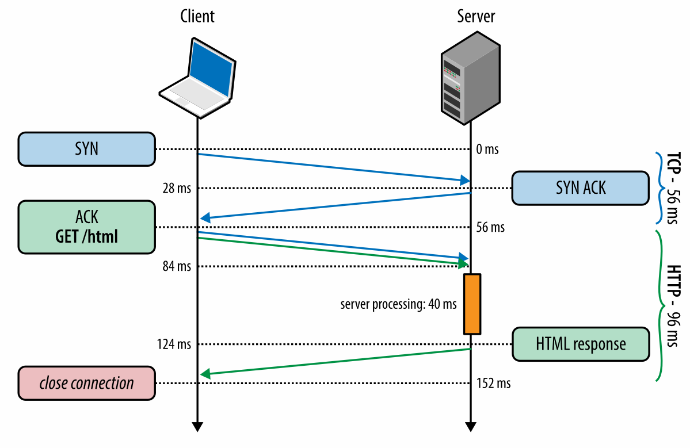
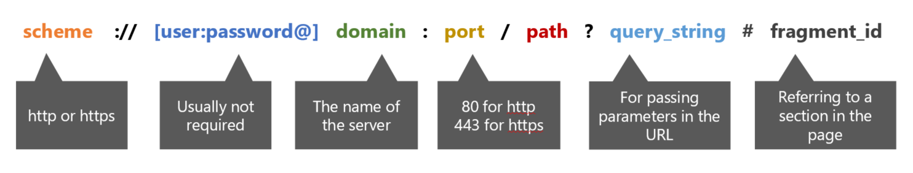
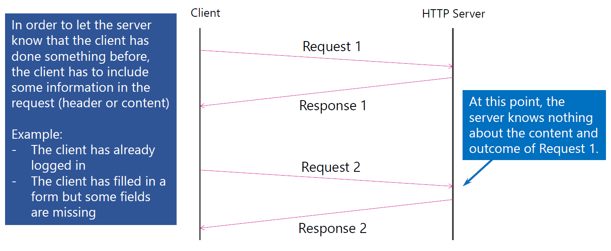

class: center, middle # IEMS 5703<br/>Network Programming and System Design ### Lecture 5 - AsyncIO / HTTP #### Albert Au Yeung<br/>8th February, 2018 --- class: split # Using `multiprocessing` in TCP Server .column-left[ ```python def handle_client(q): client = q.get() client.sendall("Hello".encode("ascii")) client.close() if __name__ == "__main__": server_socket = socket.socket( socket.AF_INET, socket.SOCK_STREAM) server_socket.bind(("localhost", 50001)) server_socket.listen(10) q = Queue() while True: (client, address) = server_socket.accept() q.put(client) p = Process(target=handle_client, args=(q,)) p.start() ``` ] .column-right[ - Instead of the method mentioned last time, you can actually **directly** pass the client socket to a new process using a **queue** - **NO need** to use any methods in the `multiprocessing.reduction` module ] --- class: middle, center # `asyncio` --- # `asyncio` - A framework for asynchronous programming in Python - For writing **single-threaded** concurrent code using coroutines - Some important concepts: 1. Event Loop 2. Coroutines 3. Futures / Tasks --- # Event Loop - An event loop is the **central execution device** in `asyncio` - It is a program construct that waits for something (**events**) to happen, and then act on them - It can register **tasks** to be executed, execute them, deplay or cancel them - It allows two or more functions to run together **co-operatively** - Example of **events**: - A client has connected to the server - A client has sent a certain request - Finished downloading a file from a remote server - Each event may be associated with some functions (**callbacks**), which will be invoked when the event is triggered --- # Futures / Tasks ### A **future** is an object that is supposed to have a **result** in the future - **Task** is a scheduler, it schedule the execution of a coroutine - Responsible for executing a coroutine object in an event loop - A task will suspend a coroutine if the it has to wait for some futures to be completed - The event loop only runs **one** task at a time - When a task waits for the completion of a future, the event loop executes a new task (if available) --- # Example ```python import asyncio async def fake_io_operation(): # simulate some long I/O operations print("Perform I/O now...") await asyncio.sleep(1) print("I/O completed") async def compute_square(x): print("Compute square of %d" % x) await fake_io_operation() print("Square of %d is %d" % (x, x*x)) tasks = [] for i in [4, 5, 6, 7]: tasks.append(asyncio.ensure_future(compute_square(i))) loop = asyncio.get_event_loop() loop.run_until_complete(asyncio.wait(tasks)) loop.close() ``` --- class: split # Example (continue) .column-left[ ```python import asyncio async def fake_io_operation(): print("Perform I/O now...") await asyncio.sleep(1) print("I/O completed") async def compute_square(x): print("Compute square of %d" % x) await fake_io_operation() print("Square of %d is %d" % (x, x*x)) ... ``` ] .column-right[ - The `async` keyword changes a function into a **coroutine** (a *native coroutine*) - `await something` will suspect the coroutine at that point, until that *something* is completed - Calling a **coroutine function** does not start it, it will just return a **coroutine object** ] --- class: split # Example (continue) .column-left[ ```python ... tasks = [] for i in [4, 5, 6, 7]: tasks.append( asyncio.ensure_future( compute_square(i))) loop = asyncio.get_event_loop() loop.run_until_complete( asyncio.wait(tasks)) loop.close() ``` ] .column-right[ - `ensure_future` creates a task that wraps a **coroutine** (in this case the `computer_square()` function) - `asyncio.wait(tasks)` wraps all tasks in a **coroutine** so that they can be passed to the event loop - `run_until_complete` will run all the **tasks** passed to it until everything is completed ] --- class: split # Example (continue) .column-left[ - What would happen if we execute the above script? - Observations: - When one task reaches the `asyncio.sleep(1)` line, **another** task is executed - When all tasks reaches that line, the whole program is **blocked** (why?) - The program terminates when all tasks are completed ] .column-right[ ```bash Compute square of 4 Perform I/O now... Compute square of 5 Perform I/O now... Compute square of 6 Perform I/O now... Compute square of 7 Perform I/O now... I/O completed 16 I/O completed 25 I/O completed 36 I/O completed 49 ``` ] --- # Another Example - Consider another example (from https://docs.python.org/3/library/asyncio-task.html) ```python import asyncio async def compute(x, y): print("Compute %s + %s ..." % (x, y)) await asyncio.sleep(1.0) return x + y async def print_sum(x, y): result = await compute(x, y) print("%s + %s = %s" % (x, y, result)) loop = asyncio.get_event_loop() loop.run_until_complete(print_sum(1, 2)) loop.close() ``` --- # Another Example (continue) <center> <img src="img/asyncio_example.png" width="90%"> </center> --- class: split # Getting the Result of a Coroutine .column-left[ - What if you want to get back the results of the coroutines? ```python ... tasks = [] for i in [4, 5, 6, 7]: tasks.append( asyncio.ensure_future(compute_square(i))) loop = asyncio.get_event_loop() results, _ = loop.run_until_complete( asyncio.wait(tasks)) loop.close() for f in results: print(f.result()) ``` ] .column-right[ ```bash Compute square of 4 Perform I/O now... Compute square of 5 Perform I/O now... Compute square of 6 Perform I/O now... Compute square of 7 Perform I/O now... I/O completed I/O completed I/O completed I/O completed 16 25 49 36 ``` ] --- # Using `asyncio.gather()` - `asyncio.gather()` focuses on gathering all results for you - It may not run the coroutines in order, but the results will be in order as the input ```python ... loop = asyncio.get_event_loop() coros = [compute_square(i) for i in range(5)] all_futures = asyncio.gather(*coros) loop = asyncio.get_event_loop() results = loop.run_until_complete(several_futures) loop.close() # results is a list: [0, 1, 4, 9, 16] ``` --- # Event Loop - Notice that we must use `run_until_complete()` to make sure that all tasks have been completed - `ensure_future()` creates a future from the coroutine function, it also tries to execute the task - What if we do not wait for the completion of the task(s) (try removing the line with `run_until_complete()`)? ```bash Task was destroyed but it is pending! task: <Task pending coro=<compute_square() running at example2.py:8>> Task was destroyed but it is pending! task: <Task pending coro=<compute_square() running at example2.py:8>> Task was destroyed but it is pending! task: <Task pending coro=<compute_square() running at example2.py:8>> Task was destroyed but it is pending! task: <Task pending coro=<compute_square() running at example2.py:8>> sys:1: RuntimeWarning: coroutine 'compute_square' was never awaited ``` --- # Concurrent Execution of Many Tasks - Do we get speed up using `asyncio`? Let's try a test ```python import asyncio async def long_task(x): print("Wait for 1/{:d} seconds...".format(x)) await asyncio.sleep(1.0 / x) return 1.0 / x coroutines = [long_task(i) for i in range(1, 101)] loop = asyncio.get_event_loop() all_futures = asyncio.gather(*coroutines) loop.run_until_complete(all_futures) loop.close() ``` --- # Concurrent Execution of Many Tasks - We can measure the time of the execution of the script by: ```bash $ time python3 example.py ... real 0m1.099s user 0m0.100s sys 0m0.004s ``` - If the tasks are executed sequentially, it would require 1 + 1/2 + 1/3 + ... + 1/100 = **5.187 seconds** - When a task has to wait, the event loop will start to execute another task, thus almost all tasks are started at the same time. --- class: middle, center # The Hypertext Transfer Protocol (HTTP) --- # The OSI 7-Layer Model <center> <img src="img/osi_layers.png" width="60%"> </center> --- # TCP vs. HTTP - TCP is a streaming protocol for exchanging data between computers on the Internet (which is based on the IP protocol) - Using TCP on the application level can be difficult - Having an **application layer** protocol simplifies the development of a particular type of applications, and can also introduce some standards - HTTP defines several things for communication between Web clients and servers - Uniform Resource Locators (URLs) - HTTP methods - HTTP headers - HTTP status codes - ... --- # History of HTTP and the Web - [Tim Berners-Lee](https://en.wikipedia.org/wiki/Tim_Berners-Lee), credited as the inventor of the World Wide Web, created the original HTTP protocol and HTML (Hypertext Markup Language) in 1990 at [CERN](https://home.cern/) for combining the Internet and hypertext <center> </center> --- # History of HTTP and the Web - [History of the Web - World Wide Web Foundation](https://webfoundation.org/about/vision/history-of-the-web/) - [Tim Berners-Lee: The next Web of open, linked data](https://www.youtube.com/watch?v=OM6XIICm_qo) - [info.cern.ch](http://info.cern.ch/) - The first Website in the history! - Tim Berners-Lee is the recipient of the [2016 Turing Award](https://amturing.acm.org/award_winners/berners-lee_8087960.cfm) <center> </center> --- # HTTP - HTTP is an application protocol for transferring hypertext and other file formats over the Internet - Current widely used version: **HTTP/1.1** (standardized in 1997) [RFC 2616](https://tools.ietf.org/html/rfc2616) - HTTP/2 specification was published as RFC 7540 in May 2015 - **Client-Server model**: - Client (e.g. Web browser) sends an HTTP request to a URL - Server prepares and returns the requested resources - Read https://www3.ntu.edu.sg/home/ehchua/programming/webprogramming/HTTP_Basics.html --- # HTTP <center>  </center> - Reference: [https://hpbn.co/http1x/](https://hpbn.co/http1x/) --- # HTTP - **HTTP** is an application protocol designed on top of the **TCP protocol** - Once the TCP connection is established, the client can send a request to the server ```bash GET / HTTP/1.1 Host: www.cuhk.edu.hk Accept-Language: fr (\r\n) ``` - The first line specifies the method (`GET`), the path (`/`), and the HTTP version - The second line specifies the server name (domain name) - From the second line onwards, these are **headers** of the requests - The last empty line indicates end of the header --- # HTTP - Another example with data sent to the server ```bash POST /contact_form.php HTTP/1.1 Host: developer.mozilla.org Content-Length: 64 Content-Type: application/x-www-form-urlencoded name=Joe%20User&request=Send%20me%20one%20of%20your%20catalogue ``` - Content-Length specifies the lenght of the data sent to the server (64 bytes in this case) - The content (data) follows the empty line - (Ref: https://developer.mozilla.org/en-US/docs/Web/HTTP/Session) --- # HTTP Request ### An HTTP request has the following components - URL - the unique identifier of the online resource - Method/Verb – the action of the request (e.g. GET something?) - HTTP Version – the version of the protocol you are using - Headers – the metadata of the request - Body – Data to be sent to the server --- # HTTP Response ### An HTTP response has the following components - Status Code – indicate whether the request is successful - HTTP Version - the version of the protocol you are using - Headers – metadata of the response - Body – data of the resource requested --- # Uniform Resource Locator (URL) - A specific type of URI (Uniform resource identifier) - It implies the means to access a resource - Syntax of a URL: <center>  </center> --- # URL Examples - CUHK Homepage<br/>http://www.cuhk.edu.hk/chinese/index.html - YouTube Video<br/>https://www.youtube.com/watch?v=Q93o1yBr-Mc - Apple Daily<br/>http://hkm.appledaily.com/list.php?category_guid=4104&category=daily - Instagram API<br/>https://api.instagram.com/v1/users/self/feed?access_token=ACCESS-TOKEN - Wikipedia<br/>https://en.wikipedia.org/wiki/Python_(programming_language)#Libraries --- # HTTP Methods ### Indicate the **desired action** to be performed on the resource identified by the URL - `GET` – retrieves data from the server - `HEAD` – asks for a response same as GET, but without the body - `POST` – asks the server to accept data enclosed in the request and apply it to the resource - `PUT` – asks the server to store the data under the supplied URL - Other methods: `DELETE`, `TRACE`, `OPTIONS`, `CONNECT`, `PATCH` --- # HTTP GET ### An example of GET: - https://www.youtube.com/watch?v=Q93o1yBr-Mc - Retrieve a YouTube video page providing the value of the parameter v - It has no effect on the resource to be retrieved, it simply retrieves a copy of the resource - `v=Q93olyBr-Mc` is the query string --- # Query String - Each parameter and its value are specified by **name**=**value** - Parameters are separated by ampersand `&` - The maximum amount of information that can be passed to the server using the query string depends on the maximum length allowed for an URL (The limits of different browsers are different, usually at about 64K characters) - NOT for passing sensitive data (e.g. password) (*Why?*) --- class: split # HTTP POST .column-left[ ### An example of POST: - https://www.ft.com/ - After filling in the user name and password and clicking on the **Sign in** button, the data will be sent to the server using the `POST` method - Usually used for submitting a form (e.g. online forms, leaving comments, etc.) - The username and password will be put in the **body** of the request and sent to the server ] .column-right[ <center> <img src="img/ft_login.png" width="90%"> </center> ] --- # Sending Binary Data - Recall that HTTP is a **text protocol** (i.e. everything sent using HTTP are assumed to be characters) - If you want to send files (binary data), you need to **encode** the binary data first before sending - In an HTML form, set `enctype=multipart/form-data` - Setting enctype=“multipart/form-data” tells the server that the data are split into multiple parts, one for each file, plus one for the textual data in the form body. - Ref: https://developer.mozilla.org/en-US/docs/Web/Guide/HTML/Forms/Sending_and_retrieving_form_data ```html <form method=“post” enctype=“multipart/form-data”> <input type=“text” name=“name”> <input type=“file” name=“file”> <input type=“submit” value=“Send!”> </form> ``` --- # HTTP Headers ### Headers contain metadata about the request/response, such as: - Identity of the client - Type of the content (e.g. plain text, HTML, CSS, image) - Encoding of the content (e.g. ASCII, utf-8) - Expiry date/time of the content - Cookies - ... - (For a list of HTTP request and response header fields,<br/>see: https://en.wikipedia.org/wiki/List_of_HTTP_header_fields) --- # Checkng HTTP Headers - Use the developer’s tools in Firefox or Chrome: <center> <img src="img/developer_tool.png" width="90%"> </center> --- # HTTP Headers ### HTTP headers are sets of **key-value pairs** (field names and values) - Some of the **<span style="color: #449922">request header keys</span>**: - **Accept**: the preferred format of the resource (e.g. text/html, application/json, application/xml) - **Accept-Language**: the preferred language of the resource (e.g. zh-TW, zh-CN, en-US) - **User-Agent**: the type of browser or device (e.g. indicate whether the client is on a PC or on a mobile) - Some of the **<span style="color: #226699">response header keys</span>**: - **Content-Length**: length of the content of the resource - **Content-Type**: format of the resource (e.g. text/html) - **Last-Modified**: the time when the resource was last changed - **Server**: The name of the Web server serving the resource For a comprehensive list of header fields: https://en.wikipedia.org/wiki/List_of_HTTP_header_fields --- # HTTP Status Codes ### HTTP Status code is included in a HTTP response to indicate the outcome of an HTTP request - The different categories of HTTP status codes: - **1XX**: Informational - **2XX**: Successful - **3XX**: Redirection - **4XX**: Client-side error - **5XX**: Server-side error --- # Examples of HTTP Status Codes - **200**: OK<br/>Everything is OK, results should be in the response - **301**: Moved Permanently<br/>The client should send request from the URL provided instead - **403**: Forbidden<br/>The client is not authorised to access the resource - **404**: Not Found<br/>The resource cannot be found - **500**: Internal Server Error<br/>Some problem with your server application --- # Stateless Protocol - HTTP is a **stateless protocol** - The server does not retain information about clients between requests - The state of the communication is maintained **on the client side** - Each request is considered independent - No session information stored on the server-side --- # Stateless Protocol <center>  </center> --- # Accessing HTTP Resources in Python - As mentioned, HTTP runs on top of TCP, so you can use sockets to request data from an HTTP server ```python import socket # Create a socket and connect to CUHK's web server on port 80 s = socket.socket(socket.AF_INET,socket.SOCK_STREAM) s.connect(("www.cuhk.edu.hk", 80)) # Create an HTTP request and send it to the server req = "GET / HTTP/1.1\nHost: www.cuhk.edu.hk\nAccept-Language: en\n\r\n".encode("ascii") s.sendall(req) # Read the HTTP response from the server resp = s.recv(2048) print(resp) # "HTTP/1.1 200 OK\r\nServer: 02_1517723009\r\n..." ``` --- # Accessing HTTP Resources in Python - In practice, you should use modules such as `http.client`, `urllib.request` or `requests` - The first two can be found in the standard library, while `requests` is a third party package ```python import http.client # Create an HTTP connection to www.cuhk.edu.hk conn = http.client.HTTPConnection("www.cuhk.edu.hk") conn.request("GET", "/") resp = conn.getresponse() print(resp.status, resp.reason) # should print 200 OK page = resp.read() # page now contains the HTML source code of the Web page ``` --- # Accessing HTTP Resources in Python - Using `urllib.request`: ```python from urllib import request with request.urlopen('http://www.cuhk.edu.hk/') as response: page = response.read() ``` - Install `requests` by `pip3 install requests` and then you can import the module ```python import requests response = requests.get("http://www.cuhk.edu.hk") page = response.content() ``` --- class: center, middle # Assignment 2 --- # Assignment 2 - Will be released next week - **Deadline**: 3rd March, 2018 - Develop a pre-fork multi-threading TCP server offering object recognition service - You will use [SqueezeNet](https://github.com/rcmalli/keras-squeezenet) for object recognition - You will have to install `tensorflow`, `keras` and `keras_squeezenet` packages - Read the instructions *carefully* and make sure that your output is the same as in the examples - Ask questions on Slack! --- class: split # Object Recognition using SqueezeNet .column-left[ ```python import numpy as np from keras_squeezenet import SqueezeNet from keras.applications.imagenet_utils import preprocess_input from keras.applications.imagenet_utils import decode_predictions from keras.preprocessing import image model = SqueezeNet() img = image.load_img('aeroplane.jpg', target_size=(227, 227)) x = image.img_to_array(img) x = np.expand_dims(x, axis=0) x = preprocess_input(x) preds = model.predict(x) print(decode_predictions(preds)) # [[('n02690373', 'airliner', 0.99873716), ...]] ``` ] .column-right[ <center> </center> ] --- # Want to Know More? - [ImageNet](http://www.image-net.org/) (An image database with labels for training object recognition models) - [SqueezeNet](https://github.com/DeepScale/SqueezeNet) (Github repository with links to different implementations and research papers) - [Tensorflow](https://www.tensorflow.org/) and [Keras](https://keras.io/) --- class: center, middle # End of Lecture 5